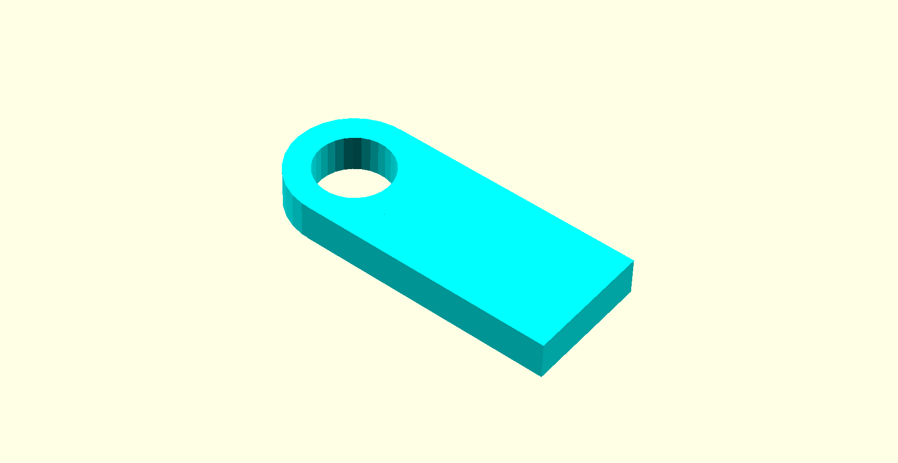
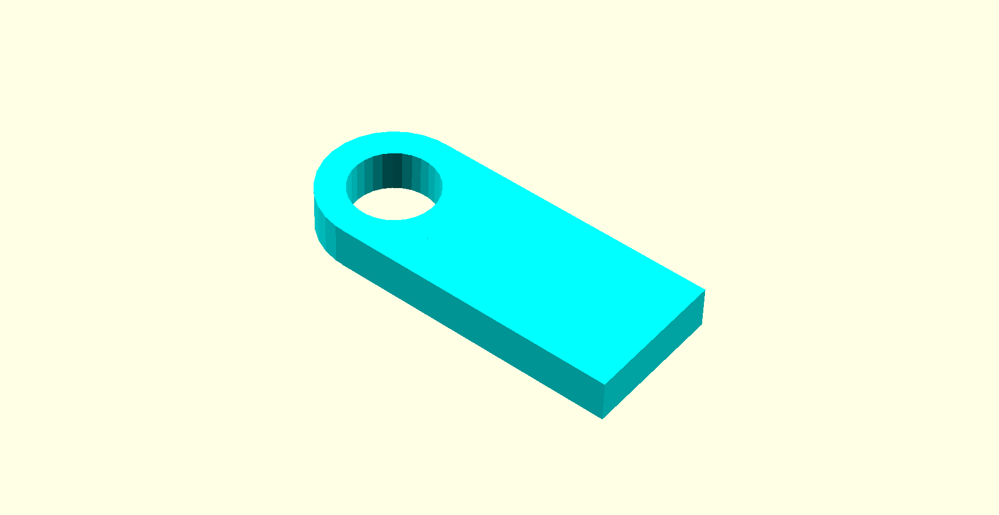
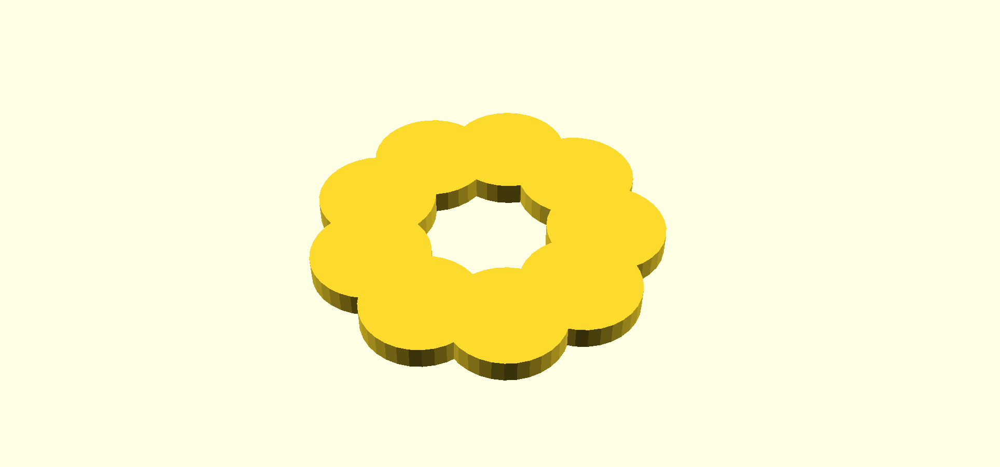
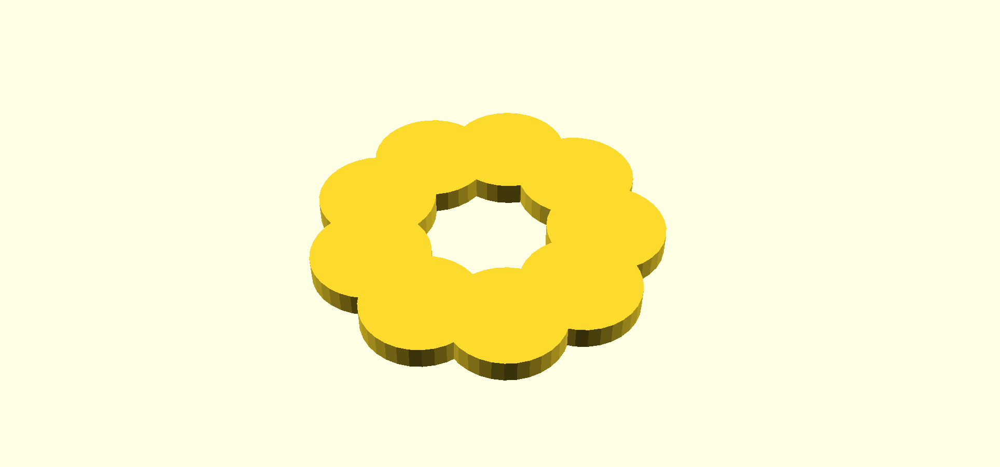

3D Forms
Overview
Explore building three dimensional forms with OpenSCAD, a functional programming language for constructive solid geometry modeling.
Tools
p5.js
3D Forms
It is not hard to understand modern art. If it hangs on a wall it’s a painting, and if you can walk around it it’s a sculpture.
Tom Stoppard, author of Rosencrantz & Guildenstern are Dead
Most of the favorite subjects of representational art—the human figure, landscapes, still life—are three dimensional forms. Paintings and drawings represent these forms by projecting them into two dimensions. This is a destructive process in which part of the form is lost. You can not walk around a painting to see its subject from the other side. A painting strives to convey a sense of scale, of volume, of substance, and of presence, whereas a sculpture cannot escape them.
While you can rotate computer generated 3D shapes, you are still seeing a 2D projection when you look at them on a screen. 3D Printing brings these shapes into into the physical world. Getting “real” results from procedural generation can be very gratifying. Viewing shapes in VR is also very satisfying and even more immediate. Virtual reality also allows exploring 3D shapes at a scale that 3D printing can not.
OpenSCAD
OpenSCAD is a language for specifying procedural 3D forms using constructive solid geometry. CSG is a modeling technique in which complex shapes are created by combining simple shapes using boolean operations like union, difference, and intersection. It is well suited to designing mechanical parts for manufacturing, but not well suited for organic shapes, characters, or animation. OpenSCAD is a language, not an interactive modeler, and OpenSCAD files fully specify the modeling process rather than the just the resulting geometry. Because of this, OpenSCAD is well-suited to specifying parametric designs.
- OpenSCAD.org
- Main site for OpenSCAD. IDE Download, Documentation, Examples.
- CheatSheet
- A quick index of OpenSCAD’s syntax and library.
- Manual
- The specifics of the OpenSCAD IDE and language.
- OpenSCAD.net
- A web-based OpenSCAD editor and renderer. Does not implement every feature of OpenSCAD.
Functional and Declarative
The OpenSCAD Manual describes OpenSCAD as a functional programming language. One could more generally refer to OpenSCAD as a declarative language. In contrast to JavaScript, C, and Processing, it is not an imperative or procedural language.
Classifying programming languages by paradigm is tricky in practice. The boundaries of paradigms are not always clear, different paradigms have different primary concerns and may be orthogonal to each other, and many languages support multiple paradigms.
| paradigm | description |
|---|---|
| imperative | focuses on the steps needed to achieve a goal; ordered commands, mutable program state |
| ↳ procedural | an imperative approach that primarily organizes commands using procedures |
| ↳ object oriented | an imperative approach that groups related data and procedures using objects |
| declarative | focuses on what you want to achieve rather than the steps to achieve it; unordered |
| ↳ functional | a declarative approach that organizes logic using pure functions with no side effects and immutable state |
| ↳ logic | a declarative approach in which a program is a collection of logical declarations from which facts can be inferred |
The most noticeable effect of OpenSCAD being functional is that data in OpenSCAD is immutable: the value of every variable is constant. In fact, variables are not even assigned values at runtime. A variable’s value is determined and assigned at compile time, before the script is run. If you keep this in mind, data in OpenSCAD will make more sense. The OpenSCAD manual goes into more detail about how variables behave.
Infix vs. Prefix Notation
Javascript expression with infix notation
2 * 3 -> 6
2 * 3 * 4 -> 24
Lisp expressions with prefix notation
(* 2 3) -> 6
(* 2 3 4) - 24
Prefix notation isn’t that crazy. Compare it to function calls in JavaScript.
multiply(2, 3) -> 6
multiply(2, 3, 4) -> 24
You can think of OpenSCAD’s boolean and transform operations as prefix operators or function calls. Unlike JavaScript and C, the contents of {} are operands or parameters rather than commands.
union() {
cylinder (h=4, r=1, center = true);
rotate ([90,0,0]) cylinder (h=4, r=1, center=true);
}
Named Parameters
OpenSCAD with named parameters
cylinder (h=4, r=1, center = true);
OpenSCAD with positional parameters
cylinder (4, 1, 1, true);
Javascript emulating named params with an object literal
cylinder ({h=4, r=1, center=true});
JavaScript Alternatives
OpenSCAD’s functional model has its advantages, but imperative languages also have advantages. For one, imperative languages are more familiar to many programmers. To explore procedural constructive solid geometry modeling in an imperative style, you may want to use one of these tools inspired by OpenSCAD.
- OpenJSCAD
- Web-based solid modeling in JavaScript. OpenSCAD but in JS.
- OpenJSCAD.org IDE OpenJSCAD.org repo
- A web-based IDE built on OpenJSCAD.
- OpenJSCAD.org User and Programming Guide
- Manual for OpenJSCAD syntax and library.
Study Examples
These examples will build up to a simplified parametric Lego brick. To get started we’ll need the dimensions of a Lego brick.
Generating Primitives
$fn = 20;
% cube([8,8,9.6], true);
cylinder(h=1.8, r=2.4, center=true);

$fn, $fa, $fs
$fn, $fa, and $fs are special variables that control how many edges are used for drawing arcs and circles. In the example above $fn is set to 20 telling OpenSCAD to make the cylinder with 20 sides. If $fn is 0 OpenSCAD will calculate the number of sides using a minimum angle $fa between edges and a minimum edge length $fs.
%, #, *, !
The %, #, *, and ! modifier characters can alter how parts of your drawing are rendered. These can be used to ghost, highlight, disable, or isolate a shape or subtree respectively.
In the example above the cube is ghosted or backgrounded. It is shown in transparent gray but isn’t a real part of the rendered geometry.
echo
OpenSCAD has an echo() statement for tracing out debugging info.
Transformations
$fn = 20;
color("SlateBlue") {
cube([8,8,9.6], true);
}
translate([0, 0, 9.6 * .5 + 1.8 * .5]) {
cylinder(h=1.8, r=2.4, center=true);
}

Translate() moves the shapes passed to it. Here translate moves the cylinder up. Notice that the braces are used to group parameters to translate.
The example also demonstrates using color to change the color used to render the cube. Use color to make it easier to understand your model.
Boolean Operations
$fn = 20;
difference() {
union() {
cube([8,8,9.6], true);
translate([0,0,9.6 * .5 + 1.8 * .5]) {
cylinder(h=1.8, r=2.4, center=true);
}
}
translate([0,0, -9.6 * .5 + 1.8 * .5]) {
cylinder(h=1.8, r=2.4, center=true);
}
}

This example uses difference() and union() to combine shapes. A cylinder and cube are combined with union(). The resulting shape has a recess cut out using difference().
OpenSCAD may not preview this shape very cleanly. Render the shape with Main Menu > Design > Render to get a clear view of the rendered geometry.
Variables + Modules
$fn = 20;
brick_width = 8;
brick_height = 9.6;
knob_radius = 2.4;
knob_height = 1.8;
module unit_brick () {
difference() {
union() {
cube([brick_width, brick_width, brick_height], true);
translate([0, 0, (brick_height + knob_height) * .5]) {
cylinder(h=knob_height, r=knob_radius, center=true);
}
}
translate([0,0, (-brick_height + knob_height) * .5]) {
cylinder(h=knob_height, r=knob_radius, center=true);
}
}
}
unit_brick();
This example produces the same shape as the example above, but uses variables and a module definition to make the code easier to read.
For Loops
$fn = 20;
brick_width = 8;
brick_height = 9.6;
knob_radius = 2.4;
knob_height = 1.8;
rows = 2;
columns = 8;
module unit_brick () {
difference() {
union() {
cube([brick_width, brick_width, brick_height], true);
translate([0, 0, (brick_height + knob_height) * .5]) {
cylinder(h=knob_height, r=knob_radius, center=true);
}
}
translate([0,0, (-brick_height + knob_height) * .5]) {
cylinder(h=knob_height, r=knob_radius, center=true);
}
}
}
for (x = [0:columns-1], y = [0:rows-1]) {
translate([x * brick_width, y * brick_width, 0]) {
unit_brick();
}
}

This example uses for to create several instances of our basic shape. OpenSCAD’s for() looks a lot like the imperative flow control structure, but works differently because OpenSCAD is functional. Each instance is created in its own scope and no data can flow between scopes. The syntax also allows “iterating” over multiple variables at once. This example will create a unit brick for every combination of x and y. In javascript you would need a nested pair of loops. Also, note that the for loop implicitly union()s the shapes.
In-class Challenge
Try creating OpenSCAD scripts for each of these shapes.
 

 

Build this shape so that you can parametrically control the number of disks that make up the ring.
Parametric OpenSCAD
OpenSCAD is particularly well suited to creating parametric designs. Thingiverse uses OpenSCAD to allow users to share and customize 3D printable objects.
Digital Fabrication
Digital Fabrication is the a prototyping and production workflow that combines computer-aided design with computer-controlled manufacturing techniques. Just as desktop publishing caused shifts in skills, methods, and equipment needed to print documents, digital fabrication is changing how objects are designed and built.
- Fused Deposition Modeling (FDM) + Fused Filament Fabrication (FFF)
- Thermoplastic is fed from a spool through a heated extruder.
- Stereolithography (SLA)
- Photopolymer resin is cured via an ultraviolet laser.
- Selective Laser Sintering (SLS)
- Powdered material is fused by a laser.
- Laminated Object Manufacturing (LOM)
- Layers of object are cut from paper or film.
- Computer Numerical Control Milling (CNC)
- Object is carved from a block of material using computer controlled cutting tool.
Slicing and G-Code
The most popular hobbyist 3D printing method is Fused Filament Fabrication or Fused Deposition Modeling (FDM). To print an OpenSCAD file on an FDM machine you need to export the rendered geometry and then “slice” it with software like Cura or Slic3r.
Slicer software creates G-code. G-code files are a list of instructions for CNC machines like 3D printers and mills. This g-code excerpt sets the move speed to 100 mm/minute and then moves the machine head to 0,0.
G0 F100;
G1 X0 Y0;
You don’t need to know much about g-code to use a 3D printer, you simply convert your model to g-code with a slicer app and load it on your printer. The app generates the g-code based on the object you are printing, the material you are using, and the specs of your machine. You can write g-code directly if you want: g-code files are plain text and relatively easy to understand. Writing your own g-code allows you to directly control your hardware, which can be useful for custom applications and machines like drawbots.
 Greg Schomburg and I created this custom drawbot project. It is controlled with g-code generated by a custom Processing app.
Greg Schomburg and I created this custom drawbot project. It is controlled with g-code generated by a custom Processing app.
Other Procedural 3D Tools
Support for procedural methods is common in 3D software. Nearly all CAD software has support for expressing design constrains and parameters. CG modeling software often hosts a runtime for executing scripts. These scripts are often used to add functionality to the UI, automate tasks, or procedurally generate 3D information.
Maya Blender
Fusion 360
Houdini
Substance Designer
Keep Sketching!
Base
This week explore using OpenSCAD, OpenJSCAD, or another tool to procedurally generate 3D shapes. Consider exporting your shapes and working with them further in a 3D package such as Cinema 4D, Maya, After Effects, or even Photoshop.
Challenge 1: Castle
Build a 3D castle! Start with a reference search and look at examples of real and fantasy castles. Castles have many interesting features to consider: towers, spires, moats, walls, crenelations, bricks, stairs, windows.
Challenge 2: Spaceship
Build a 3D spaceship! Start with a reference search and look at examples of real—yes, there are real spaceships—and fantasy spaceships. Spaceships also have many interesting features to consider: engines, wings, rockets, blasters, solar collectors, pods, antennas.
For both challenges consider using parameterization or randomization in your script to get more variety, but its okay to hard code you challenges too.